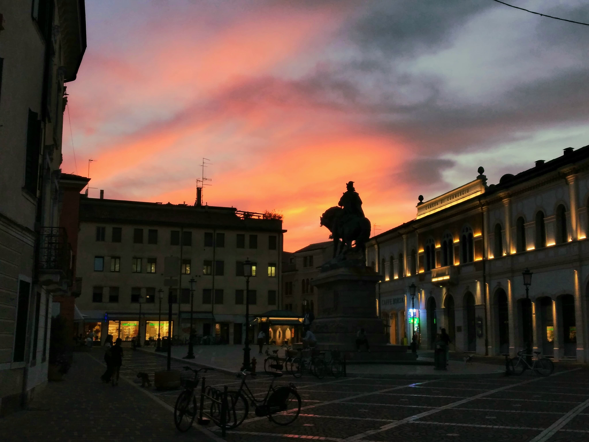
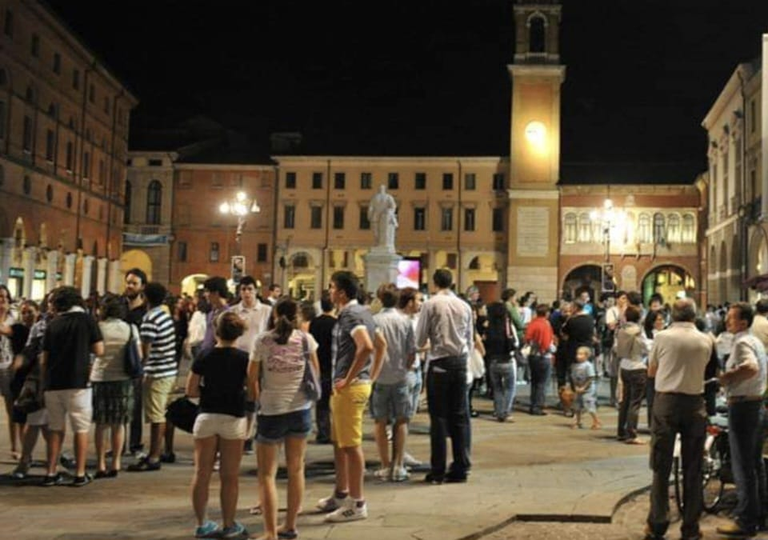
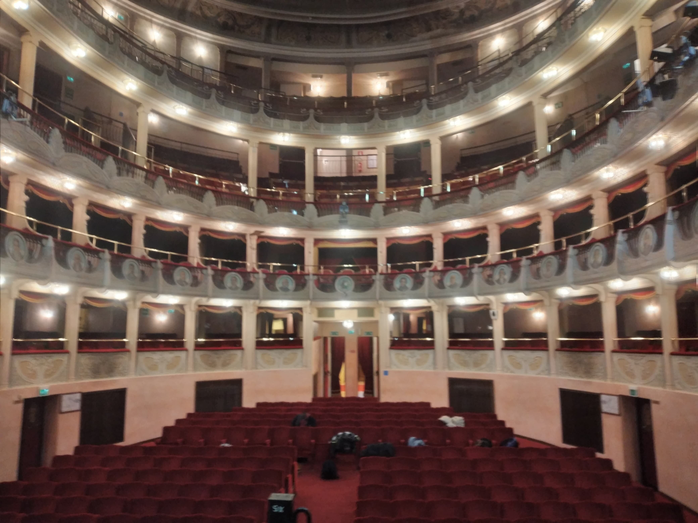
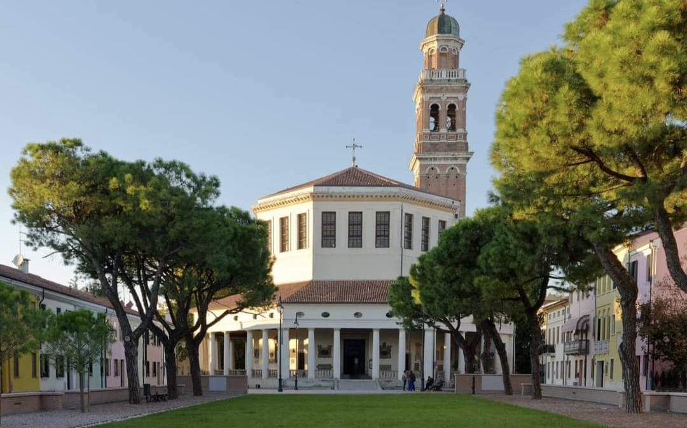

"Una piazza localizzata nel centro storico di rovigo con al centro un monumento del leggendedario Giuseppe Garibaldi
Inaugurato il novembre del 1895, realizzato da Ettore Ferrari, la statua è composta da bronzo mentre la base in granito"
"Questa piazza, nota prima come piazza maggiore prima dell'annessione del veneto nel 1866. La statua è stata scolpita nel 1881 da Giulio Monteverde"
"Costruita nel 1816 a Rovigo, l'inaugurazione si tenne il 26 aprile 1819 con 'Adelaide di Borgogna' di pietro Generali. Vittima di incendio tra il 21 e 22 gennaio del 1902 fu ricostruito dall'ingegnere milanese Daniele Donghi."
"La chiesa nota comunemente come 'La Rotonda' è una chiesa che risale al XVI/XVII secolo nata per ospitare l'immagine della madonna col bambino, per la devozione dei cittadini verso di essa."
